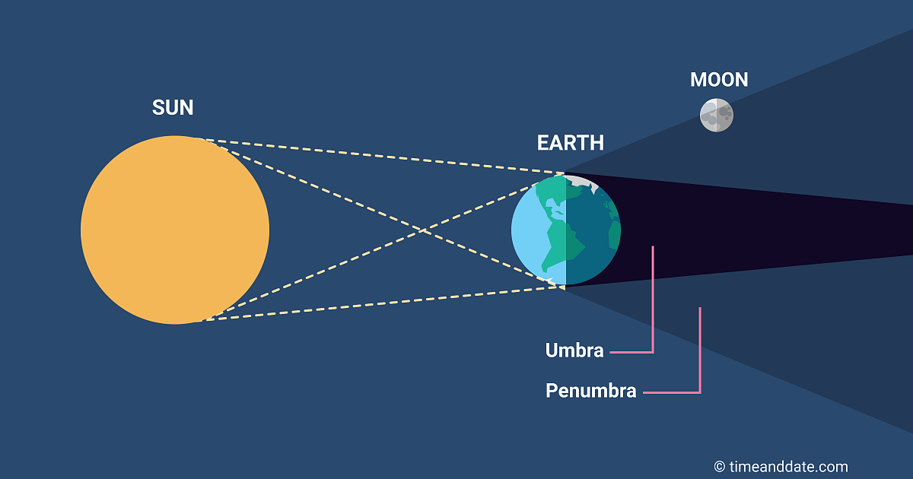

A penumbral lunar eclipse occurs when the Sun, Earth, and the Moon are imperfectly aligned.

Bar chart Visualization Of Lunar Eclipse
Select a Lunar Eclipse from Dropdown
To know more about saros number
click here